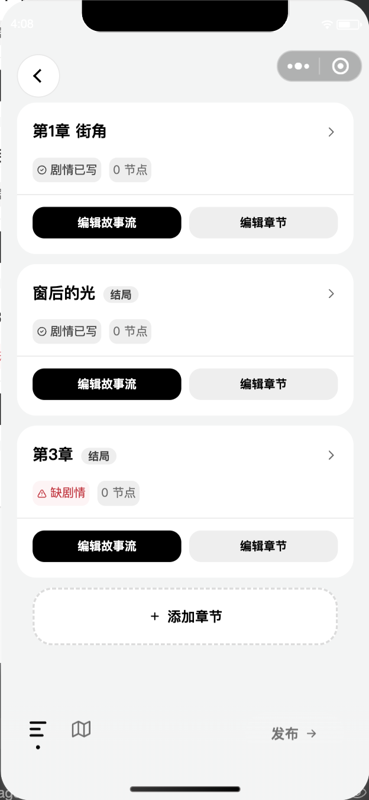

历史链路走查 · 正文伏笔方案已撤回
需求理解已纠正
伏笔属于编辑主题中的配置弹窗。正文伏笔入口缺失的缺陷判定以及此前正文插入伏笔的流程方案均已撤回；下面保留历史记录。
2026-10-05 · 本轮看添加、完成、正文引用、结局关联、草稿恢复，以及玩家获得、步数应验和通关。9 段中 2 段本地验证通过、2 处问题、5 段未完整验证。
此前修复记录 · 正文伏笔入口现已撤回
正文伏笔入口、新章节状态隔离、通关前同步三处已修。123 项相关小程序检查通过，原生配置与草稿重开已复测；真实微信步数与服务器通关仍待验收。
下方保留修复前问题与证据，不能代表当前代码仍有这三处缺陷。
修复前的两处实际问题

逐段结果
| 编号 | 流程 | 结论 | 证据范围或未验证原因 |
|---|---|---|---|
| F01 | 主题详情添加伏笔、两个必填项、完成返回 | 已验证通过 | 本地草稿；输入值通过组件 input 事件，入口和完成按钮使用原生 tap |
| F02 | 新页面恢复本机草稿 | 已验证通过 | 独立新页面从同一 draftUuid 恢复文字、步数、引用；不代表服务器保存 |
| F03 | 正文插入伏笔、玩家能遇到它 | 发现问题 | TH-FLOW-01 |
| F04 | 结局章选择伏笔、完成回填 | 未验证 | 组件 change 事件回填和完成保存已补充验证；原生开关和下拉的物理操作未验证 |
| F05 | 编辑章后新建普通章、再配置结局章 | 发现问题 | TH-FLOW-02 |
| F06 | 合法作者服务器保存、独立重开 | 未验证 | 当前连接正式服务，尚未提供允许测试的主题/场次和对应合法作者；未执行正式写操作 |
| F07 | 玩家获得伏笔、重开、重复认领、跨局隔离 | 未验证 | 正常作者路径被正文插入入口缺失阻断；尚无本轮对应合法持票玩家 |
| F08 | 真实微信步数累计、应验、拒绝授权与重复/跨日 | 未验证 | 缺真机运动密文及合法玩家场次；内部规则测试通过不能代替真机 |
| F09 | 正常通关播放应验结局、未应验兜底、结束后重开 | 未验证 | 作者—服务器—真实玩家正向链尚未建立；不能用作者预览选结局代替服务端判定 |
TH-FLOW-01 · P1
菜单仅文字、图片、音频、地点、玩法，没有伏笔；中间插入缝和末尾插入缝均未绑定 insertStoryThoughtAt
- 主题详情→添加伏笔→填写步数和文字→完成
- 创建章节→点正文插入缝的＋
预期：能把已配置伏笔放入正文，在指定位置让玩家获得
影响：新配置只有步数和文字且没有 when 条件；玩家认领要求已到达正文 thought 块。定义完仍缺玩家获得的位置，应验结局的正常链中断。后半段是本地运行规则定位，不是正式服务器实跑。
建议：在两个正文插入缝接回现有伏笔插入动作；引用主题详情里完成后的同一个伏笔，不新增第二个配置真源
复测：从正常添加配置进入正文插入，保存重开保留 thoughtKey；合法玩家读到后服务器认领/步数应验并读回，最后选择应验或兜底结局
定位依据
pages/publish/fabu/index.wxml 两个插入菜单没有绑定已存在的 insertStoryThoughtAt；后端认领读取冻结正文中的 thought 块
TH-FLOW-02 · P2
第二、第三章都沿用第一章 lid1；第三章未经设置自动继承第二章 ending，并在界面显示结局
- 完成第一章章节设置
- 点添加章节
- 配置第二章为伏笔应验结局并完成（本轮结局选择通过组件 change 事件）
- 再次正常点击添加章节
预期：新章节使用新标识，默认普通章，结局条件由作者明确设置
影响：新建普通章会被误标为结局，内部标识重复；未实跑正式保存后的错关联，不把该风险写为已发生的服务器数据损失
建议：新建时使用干净的章节草稿并生成新标识，清除上章的结局条件；继续复用既有编辑/完成动作
复测：编辑普通章/结局章后连续创建三章；三个标识唯一，新章均默认普通章，之前结局和正文不串写
定位依据
_createChapterDirect 复用 chapterForm 未清 id/_localId/ending；confrimChapter 用已有 _localId 并在编辑后保留这些字段
版本与证据
独占本轮工作树的官方模拟器；从现有空白主题编辑页进入主题详情，未从玩家中段接口跳过流程。未核实本轮作者归属或合法持票玩家。结局选择仅做组件事件回填补充，不把物理控件操作写成已验。
工作树 /Users/arlan/.codex/worktrees/thought-config-1005/chengyin，分支 feature/thought-config-1005，源码版本 ffa5b50d0452467c4b70101473f0a5a1c3e824d9。当前连接正式服务，没有执行主题服务器保存、发布、玩家推进或正式库写入。
112 项相关后端内部测试通过，失败 0、错误 0、跳过 0；这只是 API 处理、正文编译与路线/结局内部规则检查，不是正式服务或微信真人验收。此前 105 项小程序配置检查已通过，此轮没有重跑。
临时伏笔与章节已恢复为本轮开始的空白草稿；新开页面独立读回：0 章、0 伏笔、规则为空。原弹窗样式没有改动。
完整台账与接续顺序 · 原生状态与草稿恢复读回 · 112 项检查汇总 · 后端检查日志
下一轮从哪里接续
- 修正两个作者路径问题
- 正常配置正文 thought 块及一个应验结局、一个兜底结局
- 使用用户提供的允许测试主题/场次和合法作者、玩家身份，保存并跨页面/接口读回
- 真机授权微信运动，验证累计应验、重复、跨日和拒绝授权
- 真实通关后核对服务端结局、重进/重复操作；不重置原完成局
TH-FLOW-01 是当前伏笔正向链的发布阻断项。TH-FLOW-02 应先修正新建章节状态隔离，再跑整本故事。旧已完成局不重置。
接通建议：复用现有页面
添加伏笔（步数＋文字）→完成保存配置→章节正文引用伏笔→玩家读到后获得并累计步数→正常通关时选择应验或兜底结局→播放结局章→完成页。配置页的完成负责保存；达到步数才是应验。
先修正文插入入口和新章节状态继承。另有 TH-FLOW-03：当前到达成功后才同步步数，但末站的服务端路线局已结束，步数接口会拒绝推进；扫码等完成入口也缺少同步。需要在本局结束前处理最后一次步数同步。
TH-FLOW-03 为当前代码时序定位，未做真实末站复现；原台账的 9 段实跑结果不变。玩家进度菜单、结局章播放及完成页均已有，无需新增独立伏笔页面。真实微信步数与通关结局仍待真机和合法测试主题/账号验收。